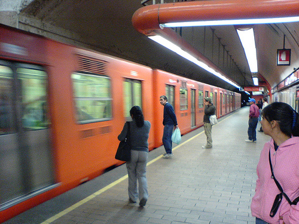
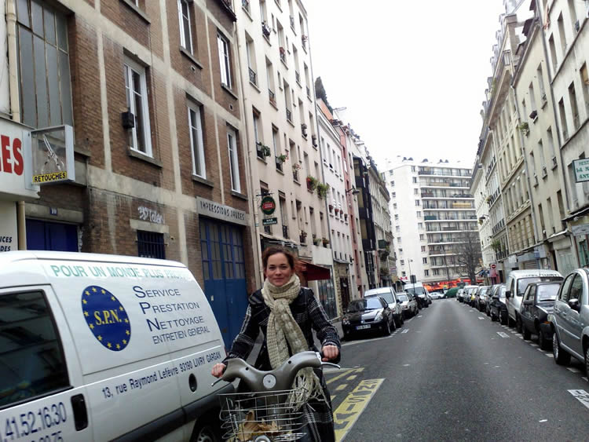
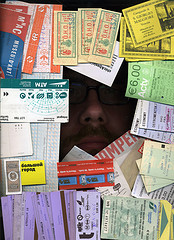

El costo del transporte público en algunos países 
En algunas ciudades de Finlandia como Estocolmo, Gotemburgo y Helsinki los usuarios del transporte público se han unido para retomar la iniciativa del transporte público gratuito. Según los usuarios los autobuses, tranvías, trenes de cercanías y metros son necesarios para moverse en la sociedad. Uno no debería elegir caminar 5 Km cuando no puede pagar el transporte público. El transporte público debería ser como la banqueta: todos pagan y todos los usan gratis. Empezar a cobrar para usar la banqueta sería ridículo, el cobro del transporte público debería considerarse igual de ridículo.
No usar el carro 
Según un estudio del gobierno danés se ha notado que para implementar una política de gratuidad en el transporte público los efectos positivos son mayores en los grandes núcleos urbanos y en las áreas metropolitanas. Esta situación ocurre porque al aplicar políticas para desmotivar el uso del auto se puede alcanzar una reducción del uso del carro superior al 10%. Otros elementos que son importantes considerar, además del precio, son la mejora de la calidad del servicio y la reducción del tiempo de viaje. También si el número de pasajeros aumenta se necesita un mayor servicio de medios de transporte públicos.
Unas estadísticas
En Francia, este año Aubagne se sumo a la lista de municipalidades que ofrecen transporte público gratuito. El costo del dinero recaudado en boletos de transporte, solo representaba el 9% del presupuesto anual. La dependencia de un auto gasta mucho más en infraestructura para sofocar el constante aumento de automóviles. Así que fue más positivo aumentar el número de usuarios y limpiar el ambiente con menos vehículos. Por otro lado, el sobre costo de la gratuidad del transporte se estima en 700.000 euros, cantidad que la comunidad está dispuesta a pagar y que representa sólo el 7% del presupuesto de transporte.
Las becas y los bonos
Desde hace años Barcelona ofrece transporte gratis para los menores de 12 años. El gobierno de la Ciudad de México ha becado en el 2009 a 9,000 adolescentes con servicios gratuitos de transporte. Estas becas representan una ayuda social más que ecológica. En Italia el gobierno te ofrece un bono para usar todos los transportes gratuitamente si mandas a la chatarra tu auto de más de diez años de antigüedad y prometes no comprar uno nuevo.
La reducción de precios de los bonos
La finalidad del uso del transporte público es reducir las emisiones contaminantes y garantizar una movilidad de calidad para la mayor parte de la población. Los gobiernos quieren tener programas para modificar el sistema de ayudas y la financiación de los sistemas de transportes. Pero también hay que pensar en un futuro escenario de encarecimiento del precio del petróleo. Así que es necesario financiar aquellos planes de transporte locales que prefieran el transporte público sobre la utilización del vehículo privado. Y algo básico a la hora de preferir el transporte público debe ser la reducción de su precio, sobre todo en los centros urbanos concurridos.